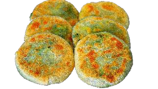
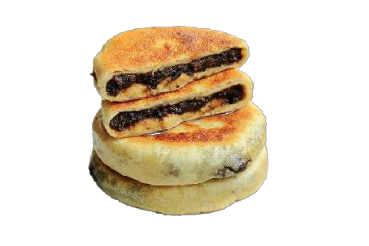

Food Example Images


Pie Production Line
JKXB-III Automatic Pie Production Line
The JKXB-III is an automatic pie production line designed for stuffed pie products. The line supports continuous forming workflow with stable shaping, efficient throughput, and factory-ready operation.
Product Type
Stuffed pie products
Weight Range
70–130 g
Workflow
Continuous production
Use Case
Industrial bakery lines
Technical Parameters
| Product Weight | 70–130 g |
|---|---|
| Core Function | Automatic forming workflow for stuffed pie products |
| Output Type | Continuous discharge, ready for baking/processing/packaging integration |
| Control System | PLC control; stable sensors; safety interlocks and alarms |
| Customization | Product size/shape, line configuration, integration modules |
| Application | Stuffed pies and related filled pastry products |
Process Flow
- Dough preparation
- Dough dividing and feeding
- Filling preparation and feeding (optional module)
- Forming and shaping
- Discharge to baking/processing line
- Cooling/stacking/packaging integration (optional)
Options & Customization
- Line layout planning according to factory space
- Different product weights and forming styles
- Integration with ovens, cooling racks, and packaging machines
- Automation upgrades and energy optimization
Request a Quotation
Provide your target pie type, weight range, capacity requirement, and available workshop space. We will propose a suitable JKXB-III line configuration.
Contact JIN KE MACHINERY